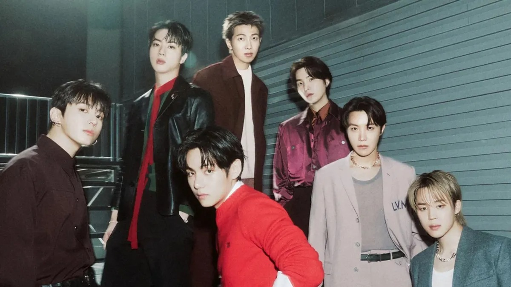

BTS: dos "underdogs" à fama

BTS: dos "underdogs" à fama
Tinha tudo para dar errado: uma gravadora quase falida, grupo não conhecido e com título de “azarões” por onde passava, mas ninguém esperava a reviravolta.
BTS começou sua carreira em 2013, com sete membros: RM, Jin, SUGA, J-Hope, Jimim, V e Jungkook, com a canção No more Dream.
Com grande diferencial de outros grupos, possuíam uma identidade onde focava em um Hip-Hop agressivo, na qual criticavam as pressões sociais sobre os jovens e o sistema educacional do país.
Porém, seu sucesso global começou a solidificar com a trilogia The Most Beautiful Moment in Life, em 2015. Foi quando adicionaram o som Pop, abordando sobre saúde mental e a angústia dos mais novos.
Quatro anos depois, 2017, se tornaram o primeiro grupo musical da Coréia do Sul a vencer um Billboard Music Award, com o álbum Love yourself: Her.
O seu domínio global e com recordes começou em 2018, onde deixaram de ser uma banda para se tornarem um movimento, com um fandom: os ARMY.
Falaram na ONU diversas vezes, e, na pandemia que lançaram seus maiores hits: Dynamite, Butter e Permission to Dance, recebendo várias indicações ao Grammy.
Porém, em 2022 a 2024, tiveram que dar uma pausa na carreira conjunta.
Focaram-se em atividades solo por tempo indeterminado, por crescimento pessoal e alistamento obrigatório no serviço militar.
Mesmo em serviço militar, o grupo deixou diversos conteúdos pré-gravados para garantir novidades para os ARMY, tendo uma estratégia de marketing e conexão sem precedentes.
E, em 2025, anunciaram a volta aos palcos com o álbum Arirang, que conta com 14 músicas e uma turnê mundial.
Mas como eles alteraram o mercado global?
O “efeito BTS” é algo impactante, mudando a infraestrutura de toda indústria musical e abrindo a porta para outros cantores e bandas coreanas.
Antes de sua chegada, o K-Pop era algo limitado apenas para o Oriente, sem chances de aumentarem suas repercussões, mas números não mentem: ao ter várias músicas no topo da Billboard Hot 100, os rapazes provaram que outros continentes consumiria músicas em coreano; forçando rádios americanas e europeias levarem o gênero à sério.
Mudou o número de vendas e streaming, fazendo com que ajustasse suas métricas, gerando outros grupos no mapa, como Stray Kids, NewJeans, BLACKPINK e entre outros.
A presença em premiações abriu um precedente: o sucesso deles criou uma demanda comercial. Organizadores de diversos festivais perceberam que K-Pop atrai multidões, garantindo vendas de ingressos e facilitando entradas de grupos como SEVENTEEN e Tomorrow X Together (TXT) nos palcos.
Normalizou as legendas e conteúdos multilíngues, normalizando em escala massiva. Superou a barreira de legendas, o BTS treinou o ouvido do público ocidental para a sonoridade do coreano, tornando mais suave para a 4º e 5º geração.
Em suma, os grupos mais velhos lutavam para se encaixar no mercado musical, cantando muitas vezes em inglês, BTS provou que podem ser quem realmente são, sendo possível vencer sendo autênticos e cantando em sua língua nativa.